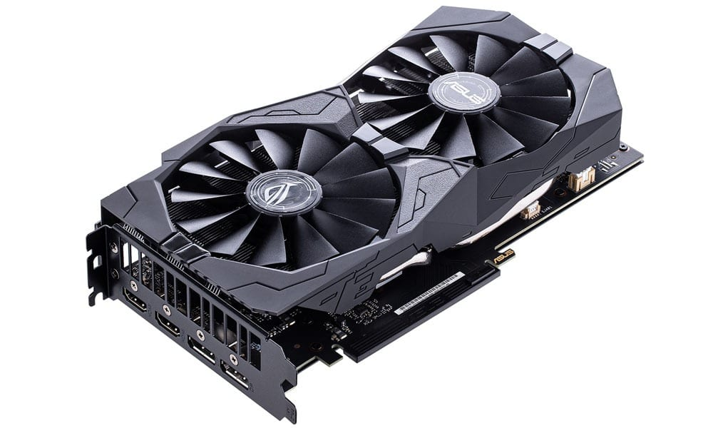

Contents
There are many components that go into a computer such as GPU, CPU, RAM, and motherboards to name a few. Each of these components has an important role to play. CPU and GPU being the most expensive components but also the ones that mainly determine how fast a computer can run There are other secondary components that can affect speed such as having a Harddrive versus an SSD because an SSD is much faster. Its also important to note not that many other components are still very important such as Motherboards and RAM as without a enough RAM or a good motherboard the system can bottleneck causing drops in performance.
| Cpu Example | Gpu Example |
 |
 |
| Harddrive Example | Motherboard Example |
 |
Continuing on there are other components that can also cause problems is not properly vetted such as Power Supply. If you don't get a high enough wattage Power Supply then your components simply wont have enough power to run properly. Another component is the cooler as some CPUs can be overclocked to increase speed and without a good enough Cooler the computer may overheat and shutdown. Additionally, you have to consider what your putting all the components into as without a large enough case you won't be able to even put the thing together in the first place. All of these components and more are an essential part in designing the best computer for you.